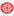
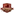
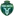
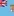

🏆 EURO 2024
| Date | Fixture  Bold-faced team is selected by AIGoalie to win. Bold-faced team is selected by AIGoalie to win. |
Odds Pre-match odds of the selected team winning. Note that odds are fetched once per day at 00:00 GMT, meaning some matches may have live odds. Also odds may not be available for all leagues. |
Win How confident AIGoalie is that the selected team will win. Low confidence indicates unpredictability of the match. ▼ |
Result Whether the selected team won, drew, or lost. |
Over The minimum number of goals predicted by AIGoalie. ⚽ = over 0.5 ⚽⚽ = over 1.5 ⚽⚽⚽ = over 2.5 ... ► |
Alerts Home 🏥 = Considerable injuries 🏥🏥 = Major injuries 📉 = Dip in form Note, you may see injuries when expanding match but no alert here, meaning the model does not consider them important. |
Alerts Away 🏥 = Considerable injuries 🏥🏥 = Major injuries 📉 = Dip in form Note, you may see injuries when expanding match but no alert here, meaning the model does not consider them important. |
|
|---|---|---|---|---|---|---|---|---|
| Wed. 19 Jun. | Germany  2:0  Hungary Form: WDWL Form: WLLW |
0.76 vs -0.76 | 1.28 | 60% | ✓ | ⚽ 1.59 |
📉 Home team has a dip in form recently | 📉 Away team has a dip in form recently |
| Wed. 19 Jun. | Croatia  2:2  Albania Form: WLDD Form: WLDL |
0.33 vs -0.36 | 1.47 | 36% | ⁃ | ⚽ 1.27 |
📉 Home team has a dip in form recently | 📉 Away team has a dip in form recently |
| Wed. 19 Jun. | Scotland  1:1  Switzerland Form: DLDL Form: DDWL |
-0.31 vs 0.2 | 1.89 | 26% | ⁃ | ⚽⚽ 2.36 |
📉 Home team has a dip in form recently | 📉 Away team has a dip in form recently |
🏆 Copa América 2024
| Date | Fixture Bold-faced team is selected by AIGoalie to win. |
Odds Pre-match odds of the selected team winning. Note that odds are fetched once per day at 00:00 GMT, meaning some matches may have live odds. Also odds may not be available for all leagues. |
Win How confident AIGoalie is that the selected team will win. Low confidence indicates unpredictability of the match. ▼ |
Result Whether the selected team won, drew, or lost. |
Over The minimum number of goals predicted by AIGoalie. ⚽ = over 0.5 ⚽⚽ = over 1.5 ⚽⚽⚽ = over 2.5 ... ► |
Alerts Home 🏥 = Considerable injuries 🏥🏥 = Major injuries 📉 = Dip in form Note, you may see injuries when expanding match but no alert here, meaning the model does not consider them important. |
Alerts Away 🏥 = Considerable injuries 🏥🏥 = Major injuries 📉 = Dip in form Note, you may see injuries when expanding match but no alert here, meaning the model does not consider them important. |
|---|
🌍 Global
| Date | Fixture Bold-faced team is selected by AIGoalie to win. |
Odds Pre-match odds of the selected team winning. Note that odds are fetched once per day at 00:00 GMT, meaning some matches may have live odds. |
Win How confident AIGoalie is that the selected team will win. Low confidence indicates unpredictability of the match. ▼ |
Result Whether the selected team won, drew, or lost. |
Over The minimum number of goals predicted by AIGoalie. ⚽ = over 0.5 ⚽⚽ = over 1.5 ⚽⚽⚽ = over 2.5 ... ► |
Alerts Home 🏥 = Considerable injuries 🏥🏥 = Major injuries 📉 = Dip in form Note, you may see injuries when expanding match but no alert here, meaning the model does not consider them important. |
Alerts Away 🏥 = Considerable injuries 🏥🏥 = Major injuries 📉 = Dip in form Note, you may see injuries when expanding match but no alert here, meaning the model does not consider them important. |
|
|---|---|---|---|---|---|---|---|---|
| Wed. 19 Jun. | B36 Tórshavn  3:0  TB Tvøroyri Form: DLWW Form: DWDW |
1.22 vs -1.93 | 1.06 | 72% | ✓ | ⚽ 1.59 |
📉 Home team has a dip in form recently | |
| Wed. 19 Jun. | Santos FC  2:0  Goiás EC Form: WDWW Form: LLWL |
0.97 vs -1.86 | 1.01 | 69% | ✓ | ⚽ 1.73 |
🏥 Home team has considerable injuries | 📉 Away team has a dip in form recently |
| Wed. 19 Jun. | HJK Helsinki  3:1  Kuopion Palloseura Form: WLWL Form: WLWW |
0.97 vs -1.49 | 2.4 | 69% | ✓ | ⚽⚽ 2.47 |
📉 Home team has a dip in form recently | 📉 Away team has a dip in form recently |
| Wed. 19 Jun. | Germany 2:0 Hungary Form: WDWL Form: WLLW |
0.76 vs -0.76 | 1.28 | 60% | ✓ | ⚽ 1.59 |
📉 Home team has a dip in form recently | 📉 Away team has a dip in form recently |
| Wed. 19 Jun. | FC Nomme United  0:6  FCI Levadia Form: DLDL Form: WWWW |
-1.24 vs 0.73 | 59% | ✓ | ⚽⚽ 2.42 |
📉 Home team has a dip in form recently | ||
| Wed. 19 Jun. | FC Flora Tallinn  3:1  Jalgpallikool Tammeka Form: DWDL Form: LLDW |
0.7 vs -1.65 | 58% | ✓ | ⚽⚽ 2.32 |
📉 Home team has a dip in form recently | 📉 Away team has a dip in form recently | |
| Wed. 19 Jun. | Breidablik Kópavogur  2:1  KA Akureyri Form: DLLD Form: LLWW |
0.58 vs -1.27 | 53% | ✓ | ⚽⚽ 2.88 |
📉 Home team has a dip in form recently | 📉 Away team has a dip in form recently | |
| Wed. 19 Jun. | Ulsan HD FC  7:4 after pens  Gyeongnam FC Form: WWLD Form: LDLW |
0.54 vs -1.31 | 52% | ✓ | ⚽⚽ 2.1 |
📉 Home team has a dip in form recently | 📉 Away team has a dip in form recently | |
| Wed. 19 Jun. | FC Buxoro  3:0  Aral Nukus Form: LWWL Form: WLDL |
0.49 vs -1.1 | 49% | ✓ | ⚽ 1.02 |
📉 Home team has a dip in form recently | 📉 Away team has a dip in form recently | |
| Wed. 19 Jun. | The Cong - Viettel FC  0:0 Ho Chi Minh City FC Form: DWLL Form: DDWW |
0.48 vs -1.41 | 49% | ⁃ | ⚽ 1.04 |
📉 Home team has a dip in form recently | ||
| Wed. 19 Jun. | Surkhon Termiz  2:1  Metallurg Bekabad Form: DWLW Form: LDLL |
0.46 vs -1.28 | 47% | ✓ | ⚽⚽ 2.16 |
📉 Home team has a dip in form recently | 📉 Away team has a dip in form recently | |
| Wed. 19 Jun. | Turun Palloseura  2:2  Pallokerho-35 Form: WWLD Form: DLLL |
0.45 vs -0.98 | 46% | ⁃ | ⚽⚽ 2.22 |
📉 Home team has a dip in form recently | 📉 Away team has a dip in form recently | |
| Wed. 19 Jun. | FC Dziugas Telsiai  0:4  FK Zalgiris Vilnius Form: WLLD Form: WWLL |
-0.9 vs 0.35 | 38% | ✓ | ⚽ 1.77 |
📉 Home team has a dip in form recently | 📉 Away team has a dip in form recently | |
| Wed. 19 Jun. | Croatia 2:2 Albania Form: WLDD Form: WLDL |
0.33 vs -0.36 | 1.47 | 36% | ⁃ | ⚽ 1.27 |
📉 Home team has a dip in form recently | 📉 Away team has a dip in form recently |
| Wed. 19 Jun. | CSD Vargas Torres  21:00  San Antonio FC Form: LLDL Form: DLLW |
0.28 vs -1.11 | 32% | 😴 0.62 |
📉 Home team has a dip in form recently | 📉 Away team has a dip in form recently | ||
| Wed. 19 Jun. | Seongnam FC  6:5 after pens  Chungbuk Cheongju FC Form: LLDL Form: LWDL |
0.26 vs -0.97 | 2.34 | 31% | ✓ | ⚽ 1.31 |
📉 Home team has a dip in form recently | 📉 Away team has a dip in form recently |
| Wed. 19 Jun. | Club Africain Tunis  0:0  Etoile Sportive du Sahel Form: DDWL Form: DLDL |
0.26 vs -0.92 | 2.0 | 31% | ⁃ | 😴 0.35 |
📉 Home team has a dip in form recently | 📉 Away team has a dip in form recently |
| Wed. 19 Jun. | Scotland 1:1 Switzerland Form: DLDL Form: DDWL |
-0.31 vs 0.2 | 1.89 | 26% | ⁃ | ⚽⚽ 2.36 |
📉 Home team has a dip in form recently | 📉 Away team has a dip in form recently |
| Wed. 19 Jun. | FC Lahti  3:3  IF Gnistan Form: WDLD Form: LDLL |
0.18 vs -0.89 | 24% | ⁃ | ⚽⚽ 2.64 |
📉 Home team has a dip in form recently | 📉 Away team has a dip in form recently | |
| Wed. 19 Jun. | Daejeon Hana Citizen  7:8 after pens  Jeju United Form: WLLD Form: LWLW |
0.17 vs -1.38 | 2.52 | 23% | ❌ | ⚽⚽ 2.14 |
📉 Home team has a dip in form recently | 🏥 📉 Away team has considerable injuries and a dip in form recently |
| Wed. 19 Jun. | Yokohama F. Marinos  3:2  Sanfrecce Hiroshima Form: LLLL Form: WDDL |
0.16 vs -0.74 | 23% | ✓ | ⚽⚽ 2.48 |
📉 Home team has a dip in form recently | 📉 Away team has a dip in form recently | |
| Wed. 19 Jun. | Grêmio Novorizontino  1:1  Amazonas FC Form: LDWD Form: LDWD |
0.16 vs -0.82 | 22% | ⁃ | ⚽ 1.08 |
📉 Home team has a dip in form recently | 📉 Away team has a dip in form recently | |
| Wed. 19 Jun. | Vaasan Palloseura  1:1  AC Oulu Form: DLLL Form: DWWL |
0.15 vs -0.9 | 22% | ⁃ | ⚽⚽ 2.63 |
📉 Home team has a dip in form recently | 📉 Away team has a dip in form recently | |
| Wed. 19 Jun. | Yelimay Semey  2:1  FK Aktobe Form: WDDD Form: LWLL |
0.11 vs -0.75 | 19% | ✓ | ⚽ 1.68 |
📉 Home team has a dip in form recently | 📉 Away team has a dip in form recently | |
| Wed. 19 Jun. | Ekenäs IF  1:2  IFK Mariehamn Form: WWLW Form: LWLL |
0.1 vs -0.81 | 18% | ❌ | ⚽⚽ 2.05 |
📉 Home team has a dip in form recently | 📉 Away team has a dip in form recently | |
| Wed. 19 Jun. | FK TransINVEST  3:0  FK Panevezys Form: WLWL Form: LLWL |
-0.85 vs 0.09 | 2.42 | 17% | ❌ | ⚽ 1.58 |
📉 Home team has a dip in form recently | 🏥 📉 Away team has considerable injuries and a dip in form recently |
| Wed. 19 Jun. | Pohang Steelers  6:5 after pens  Suwon Samsung Bluewings Form: WDWD Form: LWDD |
0.08 vs -0.96 | 1.65 | 16% | ✓ | ⚽ 1.77 |
📉 Home team has a dip in form recently | 🏥 📉 Away team has considerable injuries and a dip in form recently |
| Wed. 19 Jun. | Paysandu SC  1:1  Clube de Regatas Brasil (AL) Form: DWDD Form: WDLD |
0.05 vs -0.76 | 2.34 | 14% | ⁃ | ⚽ 1.69 |
📉 Home team has a dip in form recently | 📉 Away team has a dip in form recently |
| Wed. 19 Jun. | York United FC  00:00  Pacific FC Form: WWLW Form: WLLW |
0.04 vs -0.72 | 13% | ⚽ 1.57 |
📉 Home team has a dip in form recently | 📉 Away team has a dip in form recently | ||
| Wed. 19 Jun. | Ilves Tampere  2:2  SJK Seinäjoki Form: LDDW Form: DWWW |
0.04 vs -0.59 | 13% | ⁃ | ⚽⚽ 2.7 |
📉 Home team has a dip in form recently | ||
| Wed. 19 Jun. | ÍF Grótta  2:3  UMF Njardvík Form: WDWD Form: DWLL |
0.03 vs -0.63 | 12% | ❌ | ⚽⚽ 2.08 |
📉 Home team has a dip in form recently | 📉 Away team has a dip in form recently | |
| Wed. 19 Jun. | Atlético Clube Goianiense  1:2  Criciúma Esporte Clube Form: DDLL Form: WDWW |
0.02 vs -0.98 | 12% | ❌ | ⚽⚽ 2.22 |
🏥 📉 Home team has considerable injuries and a dip in form recently | ||
| Wed. 19 Jun. | Manta FC  2:1  Cuniburo FC Form: WWLW Form: WWWW |
-0.0 vs -0.84 | 10% | ✓ | ⚽ 1.66 |
📉 Home team has a dip in form recently | ||
| Wed. 19 Jun. | FK Suduva Marijampole  2:2  FK Kauno Zalgiris Form: LLLD Form: WWLW |
-0.62 vs -0.01 | 2.02 | 10% | ⁃ | ⚽⚽ 2.38 |
📉 Home team has a dip in form recently | 📉 Away team has a dip in form recently |
| Wed. 19 Jun. | Salon Palloilijat 1:3  Järvenpään Palloseura Form: DLWL Form: LWDD |
-0.05 vs -0.63 | 9% | ❌ | ⚽⚽ 2.27 |
📉 Home team has a dip in form recently | 📉 Away team has a dip in form recently | |
| Wed. 19 Jun. | Käpylän Pallo  0:3  FF Jaro Form: LLDD Form: DWWW |
-0.37 vs -0.08 | 8% | ✓ | ⚽⚽ 2.55 |
📉 Home team has a dip in form recently | ||
| Wed. 19 Jun. | FC Haka  0:0  FC Inter Turku Form: WLWW Form: DWWW |
-0.09 vs -0.46 | 8% | ⁃ | ⚽⚽ 2.38 |
📉 Home team has a dip in form recently | ||
| Wed. 19 Jun. | US Monastir  1:1  Stade Tunisien Form: WLDL Form: DWWW |
-0.11 vs -0.44 | 1.61 | 8% | ⁃ | 😴 0.73 |
📉 Home team has a dip in form recently | |
| Wed. 19 Jun. | Club Leones del Norte  21:00  Chacaritas FC Form: LWWW Form: LLWL |
-0.12 vs -0.51 | 2.16 | 8% | ⚽ 1.26 |
📉 Away team has a dip in form recently | ||
| Wed. 19 Jun. | Papua New Guinea  1:1 Tahiti Form: LLDW Form: DLLW |
-0.45 vs -0.13 | 7% | ⁃ | ⚽⚽ 2.52 |
📉 Home team has a dip in form recently | 📉 Away team has a dip in form recently | |
| Wed. 19 Jun. | Gimpo FC  1:0  Jeonbuk Hyundai Motors Form: WDDD Form: LDLD |
-0.75 vs -0.14 | 7% | ❌ | ⚽ 1.15 |
📉 Home team has a dip in form recently | 📉 Away team has a dip in form recently | |
| Wed. 19 Jun. | Botafogo de Futebol e Regatas  1:1  Club Athletico Paranaense Form: WDWW Form: LWLW |
-0.16 vs -0.98 | 7% | ⁃ | ⚽ 1.84 |
🏥 Home team has considerable injuries | 🏥 📉 Away team has considerable injuries and a dip in form recently | |
| Wed. 19 Jun. | Las Vegas Lights FC  3:3  Colorado Springs Switchbacks FC Form: DDWW Form: WDWW |
-0.16 vs -0.47 | 2.68 | 7% | ⁃ | ⚽ 1.76 |
||
| Wed. 19 Jun. | Samoa 1:9  Fiji Form: WLLL Form: WWLL |
-0.24 vs -0.16 | 7% | ✓ | ⚽⚽⚽⚽ 4.66 |
📉 Home team has a dip in form recently | 📉 Away team has a dip in form recently | |
| Wed. 19 Jun. | JK Trans Narva  0:1  FC Kuressaare Form: WLLD Form: DLWD |
-0.16 vs -0.72 | 2.02 | 7% | ❌ | ⚽⚽ 2.99 |
📉 Home team has a dip in form recently | 📉 Away team has a dip in form recently |
| Wed. 19 Jun. | Bucheon FC 1995  2:3  Gwangju FC Form: LWLD Form: LLWL |
-0.49 vs -0.17 | 1.7 | 7% | ✓ | ⚽ 1.06 |
📉 Home team has a dip in form recently | 📉 Away team has a dip in form recently |
| Wed. 19 Jun. | Quang Nam FC  4:2  Song Lam Nghe An FC Form: WWLL Form: LLDW |
-0.27 vs -0.6 | 2.14 | 5% | ✓ | ⚽ 1.51 |
📉 Home team has a dip in form recently | 📉 Away team has a dip in form recently |
| Wed. 19 Jun. | JIPPO Joensuu  0:0  Mikkelin Palloilijat Form: LDLW Form: LDLW |
-0.33 vs -0.34 | 3% | ⁃ | ⚽ 1.97 |
📉 Home team has a dip in form recently | 📉 Away team has a dip in form recently | |
| Wed. 19 Jun. | Xorazm Urganch  0:0  Mash'al Mubarek Form: WDDW Form: WDWL |
-0.45 vs -0.33 | 3% | ⁃ | ⚽ 1.3 |
📉 Home team has a dip in form recently | 📉 Away team has a dip in form recently |
Last updated 20:14:47 2024-07-09
Privacy Policy - 18+. Gamble Responsibly. - Terms